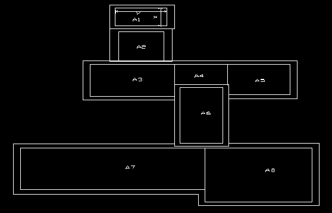
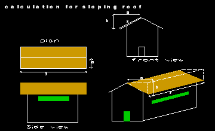
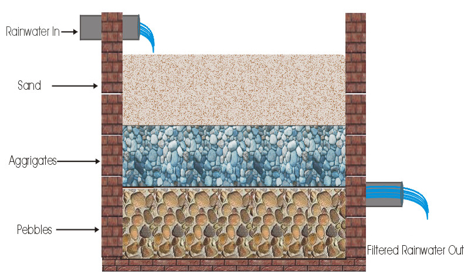
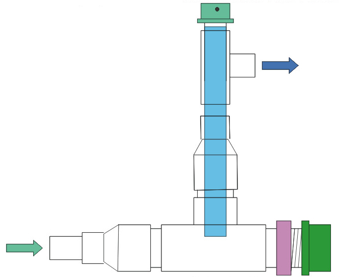
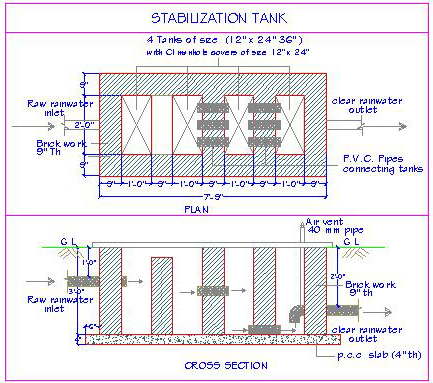
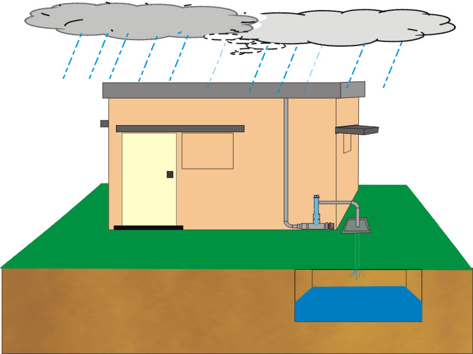
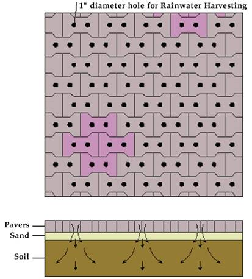

In urban areas, buildings are usually constructed with rooftops of Reinforced Cement Concrete (RCC), Mangalore tiles, Asbestos / galvanized iron / zinc sheets etc. Construction of buildings with the above mentioned material requires roof top rainwater to be removed from building tops and currently been let off into storm water drains outside the plot area (which eventually goes away from the city).
The rooftops being built significantly with hard material, large quantities of rainwater runoff and loss due to evaporation and percolation are very minimal. Thus, rooftop rain water harvesting can be put to good use by storing rooftop water on (a) roof itself (b) ground level (c) below the ground, by using storage devices like masonry tanks / ferro cement tanks / plastic or metal containers.
Roofs are of broadly two categories - flat roofs and sloping roofs.
Flat roofs when made with reinforced cement concrete normally have waterproofing course on the surface as a finish. The waterproof course is done with a small slope towards the downtake pipes. Usual practice is to use lime surkhi, in recent times a rich cement mortar is used ("muddy" in local parlance), weatherproof tiles are also laid on cement mortar. These types of roofs are ideal for rooftop rainwater Harvesting.

Calculation of Effective roof area
Divide the roof area into convenient grids and calculate the area of each grid.
Example A1= X x Y
Add the individual grid area to get the total roof area.
i.e. A1+A2+A3+A4+A5+A6+A7+A8... = A (Total area).
Effective roof area is excluding the peripheral wall thickness and any other opening.

Divide the roof area into convenient grids and calculate each grid area by taking projected length & breadth. Actual surface area i.e. x x y is not considered for the calculation of roof area but the projected area i.e. a x y is considered.
Example:
(A1) Area of one part of the roof = a x y
(A2) Area of other part of the roof = a x y
Total area = 2 x a x y
Down water pipes made out of PVC, HDPE or cement pipes can be used for transporting rainwater collected from roofs to the filtration system before storing. The size of the down take pipe varies depending on the roof area, which is connected to the down pipe.
Rainwater collected on the roof is very pure and clean. However, there are many substances, which get mixed up with this pure water on the roof (leaves, bird droppings, dust etc.). These contaminants need to be filtered before the rainwater is stored. There are many filtration systems.
a. Sand bed filter
b. PopUp filter
c. Stabilization tank
Sand bed filter is the traditional method where coarse riverbed sand, pebbles and aggregates are filled as layers one above the other in a confined masonry structure. Rainwater is allowed at the top from one end and filtered water is drawn from the other side.

A simple "PopUp Filter" designed by A.R. Shivakumar of KSCST and it is effectively working for residential buildings and smaller institutional or industrial applications. The "PopUp Filter" has three components (rainwater receptor, flush valve and filter element) rainwater receptor where the rainwater is allowed to flow from down pipes and a flush valve is provided to flush the first flow of the rainwater along with leaves, dust etc. Water received in the receptor flows upwards against gravity through a filter element to filter most of the floating elements and allow water to stabilize in this filtration zone. Rainwater passing through this filter element (which is relatively cleaner), flows out through an outlet, which can be led to storage device. Filter element is mounted on a vertical stabilizer pipe with a friction fit. In the normal course, rainwater gets filtered and flows through outlet into the storage device. Filter element needs to be cleaned periodically during the rainy season to remove the filtered material and to keep the filtration system clean. In the event where the filter is not cleaned and the filter element is getting clogged, The "PopUp Filter" has a built-in safety feature it to push out the filter element from the stabilizer pipe and allow the water to flow out freely. This safety feature will avoid flooding of the rooftop because of clogged filter. The first indication of the filter getting clogged is rainwater flowing out of a vent hole provided on the top of the filter element.

These PopUp filters are simple in design and are very flexible to install in verifying field conditions.
An important feature in filtering is the separation of first flush of rainwater from relatively cleaner and purer subsequent rain.
For large volume of rainwater a unique design has been developed by the author to trap light and heavy impurities with out having any filter media. Rainwater is allowed to flow through a series of small tanks and by providing an entry and exit for water at strategic positions, impurities can be trapped in the stabilization tanks for subsequent cleaning. Heavier impurities will get trapped in the first two tanks as the water flows out at the higher level. Lighter and floating impurities get trapped in the third and fourth tanks as the water flows out at the bottom or lower level. Periodic cleaning of these tanks is required to remove the impurities.

Storage of harvested rainwater is possible at various levels
The storage structures may vary from permanent masonry tanks, ferro-cement tanks to plastic or metal tanks. The capacity of storage device can be decided by considering parameters such as roof area, water usage and space availability. Water consumption in a house is throughout the year and water availability from rainfall is for a limited period restricted to number of rainy days in a year. To make rainwater available in non rainy days, storage device need to be designed with an optimum capacity to suit the need / requirement. In Rainwater Harvesting system, storage device is the single most expensive component. Optimum size of the storage device and cost effective methods to store water are the key issues for a viable roof top rainwater harvesting system.

Larger the roof area available for rainwater collection higher is the quantity of rainwater collected. Cleaner and better the quality of rooftop, cleaner and better will be the rainwater collected. Maintenance of the roof surface and keeping it clean has a direct bearing on the quality of water collected.
Rainwater collected on the roof and guided through the down water pipes gets filtered in the filtration system and is available for direct use. Rainwater coming out of the filter may be guided to a storage device for future use. Positioning, size and capacity of the storage container may be decided considering the roof area and the requirement of raw-water. Higher the storage capacity more will be the rainwater availability during the non rainy days. In urban areas, like Bangalore, total rainwater storage capacity of around 8,000 to 15,000 lts would suffice for the requirement of secondary usage (gardening, vehicle washing, cleaning etc.).
Roof yield or potential rainwater from a roof
Roof yield or the potential rainwater from a roof is normally referred to the annual yield from a given roof area. Annual yield is the quantity of water in liters collected from a given roof over a period of one year covering all the rainy days. It is the product of roof area and the annual rainfall.
Example:
a. Roof area of 100 Sq. meters with annual rainfall of 1000 mm (milimeters)
Roof yield = 100 X 1000 = 1,00,000 liters/year
b. Roof area of 1000 sq. feet with annual rainfall of 40 inches
Roof yield = 1000 X 40 X 2.36 (constant) = 94,400 liters/year
Cost of Rainwater Harvesting:
Examples to illustrate, rainwater harvesting can be many and the cost involved also vary from case to case. The parameters that influence the cost of rainwater harvesting are:
Considering the above facts, rainwater harvesting can cost as little as Rs. 1000/- and may go up to Rs. 50,000/- for a residential building.
Rainwater can also be harvested by those who does not have proper roof by creating temporary collection surface by using a clean cloth piece (Sari or Doti or Panche)
Four corners of the cloth piece may be tied with separate threads and stretched three feet above the ground and tied tightly to four supports (poles / supports / walls etc.) during a rainy day. As the rainwater falls on the outstretched cloth depressions in the middle will be formed and all the water will get collected at the center. Since the cloth is pours water will start getting filtered through the cloth and starts dripping / flowing down at the center. A vessel or a can be placed to collect this pure rainwater for further storage in an enclosed tank or a larger container for future use.
In the recent past, rapid growth in the urban areas has led to asphalted roads and stone slabs or pavers for footpaths. This accounts for nearly 10% of the total area of Bangalore. Consequent to this, the rainwater run-off has increased and ground water recharge has declined.
As the roads are built sloped towards the sides, rainwater falling on the road is guided to the side drains. When it rains, water flows from the apex to the sides and collects in the sidewalk area and subsequently flows to the storm water drains.
To increase ground water recharge by percolation and decrease the flooding of storm water drains, an infiltration trench could be built by the side of the drain all along the road, wherever possible. The infiltration trench can be 2 feet wide and 2 feet deep and filled with pebbles or aggregates with a top layer of coarse river sand.
As the rainwater from the road flows into the infiltration trench, water percolates into the ground. During heavy rainfall, excess water spills over to the storm water drains. The infiltration trenches store water temporarily during rainfall and later for infiltration. These infiltration trenches may be exposed as walk ways or paved with inter-locking pavers, specially designed with gaps in between for water to flow into the infiltration trenches.

Water harvesting methods in parks and open spaces involve micro-watershed management methods that allow rainwater infiltration and percolation into the ground. The runoff has to be minimized by providing adequate number of percolation pits and dispersion trenches. In large parks, storage of rainwater in small ponds is also possible since the ponds can be integrated with the landscape of the park. Mapping of the contours, planning for rainwater outflow in consonance with natural drainage patterns, identifying appropriate areas for percolation pits / dispersion trenches will be required.
Ground water recharge in parks can be enhanced by a simple technique of providing recharge pits or a trench.
Surface runoff water should be trapped in ponds, tanks and lakes when available, so that it can be used for maintenance during dry periods. This practice is similar to dry land technology of agricultural belts. Low-lying areas and drainage channels are earmarked and convenient micro-watersheds are prepared. Water harvesting is followed based on natural flow and surface accumulation of the runoff water. Water follows the lowest contour gradient available for that area. These structures not only provide water for the park, but also increase groundwater recharge. Providing a bore well in these areas will enhance the availability of water in its vicinity. Rainwater run-off from open space and paved areas can be stored in underground sumps by filtering through sand-bed filters and guiding the filtered water through channels.
Layout refers to a geographical area encompassing sites, roads, drains, civil amenities and parks. Rainwater Harvesting in layouts can be done using the 'Cascade Capture Method'.
In this process, rainwater can be harvested on a plot or through recharge of ground water. The run-off from the plot could be captured by storm water drains and directed into artificial infiltration or percolation pits. The overflow from the storm water drains and infiltration system could be captured in lakes and tanks. The method of rainwater harvesting involves contour mapping, drainage pattern, determining a storage point / ground water recharge and ensuring segregation of sewage / sullage from storm water run-off.